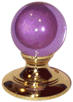
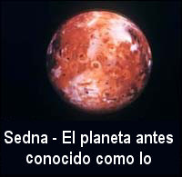
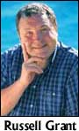
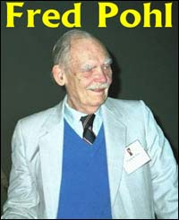

¿Por qué?
Una breve explicación, antes de iniciar la discusión de esta semana: Notarán que he estado publicando algunas de las más escandalosas solicitudes que hemos recibido para el premio de la JREF, y también algunos de los furiosos ataques a los que debemos enfrentarnos con regularidad. Esto se hace para que los lectores puedan empezar a entender lo que debemos padecer, casi todos los días, en esta oficina. Es importante que sean testigos de cuán faltos de contacto con la realidad son muchas de estas personas, cuán furiosos y desesperados se vuelven, y cuán difícil puede ser una respuesta cuando no se les exige que se rijan por las leyes de la lógica y el respeto, mientras que nosotros estamos tan ceñidos por ellas. Créanme, no es una conspiración para hacer que esta gente parezca tonta; normalmente lo logran sin que los ayudemos en lo absoluto. Publicamos este material para mantenerlos informados del hecho tripartito que nos mantiene en actividad: el público está groseramente mal informado sobre cómo funciona el mundo real, los medios alimentan esa ignorancia, y necesitamos resolver esta situación urgentemente antes de que estemos compuestos por una generación de ciudadanos acaudalados pero desinformados que pueden conducir a nuestra especie a otra Edad Oscura… y ya están formando filas precisamente para eso. No, no estoy exagerando. Lean lo que sigue para hallar algunas actitudes y opiniones sobrecogedoras y aleccionadoras que deberían alertarlos sobre el problema o recordárselos.
Finalmente: prueba fehaciente sobre los OVNIs
Hay un grupo de supuestas fotos de OVNIs que han dado vueltas desde hace años en el negocio. Véalas en http://www.billymeier.com. En relación con estas fotografías de supuestos OVNIs producidas por el “contactado” Billy Meier a mediados de los ‘70, cualquier simple reproducción de estas fotos significaría poco en el examen de la alegación, salvo para mostrar que pueden ser reproducidas. Si no se reproducen correctamente, simplemente significa que todavía no han sido reproducidas, pero no responden en lo absoluto si son fotos falsificadas o no. La reproducción mostraría que falsificarlas de esta forma es posible, pero no demostraría que Meier lo hizo así. Me acuerdo de las circunstancias en torno a mi reproducción exacta de los “fenómenos” de Geller en el King’s College del Reino Unido en julio de 1975, época en la que muchos científicos realmente estaban listos para aceptar que se había presentado un nuevo paradigma con su presentación del “doblamiento de cucharas”. Los cinco científicos prominentes que presenciaron la demostración que me habían pedido (uno de ellos un Premio Nóbel por el descubrimiento de la estructura del ADN, y el otro el editor de Nature Magazine) afirmaron, en parte, que yo había
demostrado en un laboratorio su habilidad para doblar y romper cucharas y llaves que proporcionamos. Causó ráfagas en un contador Geiger y hizo que una de nuestras cucharas se volviera flexible y luego se rompiera en dos mientras que uno de nosotros la sostenía de cada extremo. Luego el señor Randi causó que la aguja de una brújula se desviara unos 15º y causó que varios relojes se adelantaran. No le dimos ninguna de las ventajas que podrían dársele a un “sensible”. Luego de la presentación, nos reveló cómo había hecho algunos de los trucos. Creemos que al investigar fenómenos de calidad aparentemente paranormal, un mago calificado debe participar íntimamente.
Pero, más importante, ¡esta evidencia (por sí misma) no probó en modo alguno nada sobre la presentación de Geller salvo que podía ser duplicada por medio de simples trucos!
Las fotografías de Meier no establecen la existencia de OVNIs. Las fotografías son provocativas, pero nada más. Todavía falta producir pruebas de que son verdaderas, ya que (a) no hubo testigos (b) no tenemos registro de cuántas otras fotos tomó, (c) no hay otro registro de detección de OVNIs en el mismo tiempo y lugar, y (d) no sabemos qué tan conocedor de fotografía es. Y, quizá la evidencia más fuerte, ¿por qué suponen ustedes que este hombre que por lo demás es desconocido pudo estar presente de algún modo en avistamientos OVNI con tanta frecuencia que pudo tomar 1.200 fotos de ellos? Parece increíblemente fortuito, ¿no les parece? Extrañamente, sus partidarios, como el hombre que mencionamos más adelante, ¡señalan esta abundancia de fotos como evidencia de su validez! Como ocurre con tantas otras afirmaciones de lo sobrenatural, lo paranormal, o los efectos extraterrestres, la carga de la prueba están en los que alegan, no en los escépticos. Los escépticos no afirman nada, salvo que lo que afirman los alegadores no está probado.
Un hombre llamado Michael Horn, un practicante de artes marciales que se llama a sí mismo “Representante autorizado ante los medios estadounidenses para los Contactos de Billy Meier”, pero no ofrece evidencia alguna en ese carácter y no es considerado como tal por otros partidarios de Meier, parece realmente molesto. Se extiende largamente sobre toda clase de “pruebas” que dice que puede proporcionar. Compruebe los siguientes extractos de su último mensaje caldeado hacia mí, empezando con una mención del Evaluador de Estrés Psicológico (PSE) que Horn cree es mucho más eficiente que el polígrafo para probar afirmaciones oscuras. (Vea “¿Aún mejor que el polígrafo?” más adelante.) No necesito señalarle la frustración, frenesí y vitriolo soltado por este hombre, cuyo autoengaño favorito se ve amenazado. Pero tiene un don con las palabras, estoy seguro de que estarán de acuerdo conmigo en ello. He aquí lo que me escribió, en sus palabras exactas:
Quién dijo polígrafos, fueron pruebas de PSE, imbécil, y dudo que puedas pasar uno aunque lo único que te preguntaran fuera tu nombre verdadero. Y tú, charlatán y afectado, ¿eres TÚ un metalúrgico, experto en fotografía, experto en películas, experto en video, ingeniero de sonido? En tu mundo el árbol no suena cuando está en el bosque a menos que estés allí para oírlo. Pero igualmente, con la credibilidad que tienes, ¿quién te creería?
Se mostró que el metal ERA de otro mundo [énfasis de él], ¡fraude artero, mentiroso, orgulloso! Quizá no es tan de otro mundo como el tipo de artista del fraude de la peor calaña, obviamente deshonesto, engañoso y anteriormente desconocido para este mundo, que has demostrado ser. No, idiota, el juego se jugará así. Además de la evidencia ya estudiada, examinada y validada por EXPERTOS, poseemos documentos y libros con derechos de autor que se publicaron antes de que ocurrieran los eventos predichos en ellos. Tenemos prueba legal de lo paranormal, de modo que, ya que tomaste nuestra cortesía por debilidad, como los pequeños y patéticos matones como tú, internamente aterrorizados, suelen hacer, ahora te tomaremos la palabra para que pagues.
Tu valor, tu única relevancia en este debate se reduce a proveer el retrato prototípico de cuerpo entero de un verdadero creyente, anticientífico y cultista, haciéndose pasar por “científico” en contraste con aquéllos que se han tomado el tiempo para investigar, verificar y descubrir la verdad. Y, en lugar de escabullirte porque tus 15 minutos de fama han pasado hace mucho, te aliento a tí y a tu bandita feliz de despistados chapuceros a que mantengan la charada, incluso a riesgo de que la gente piense que nosotros los contratamos para lucir estúpidos, no profesionales, antiéticos y de mala fama, cuando en verdad esa es tu caritativa donación a la causa.
Tú, pequeño, eres un charlatán patético, débil y completamente fuera de tu elemento, y es por eso que ningún científico fiable, sin mencionar a los individuos racionales y pensantes, apoyarían tus tontos disparates ni por un segundo.
Duerme la mona antes de que hagas tus truquitos para los niños… y que tengas un buen día.
Caray, caray. Toma una aspirina y llámame en la mañana, Michael. Y, para futura referencia, se supone que el árbol cae en el bosque, porque los árboles de pie no hacen ruido alguno. ¿Entiendes, Michael?
Lo que realmente me gustó de lo de más arriba es la línea “Se mostró que el metal ERA de otro mundo”. Nótese: el énfasis (itálica, mayúsculas y subrayado) es de Horn, no mío, por lo que esta afirmación es más que un mero comentario casual. Anteriormente había escrito:
Muestras de aleaciones metálicas provistas para su análisis por Meier a Marcel Vogel (antiguo químico investigador de IBM, poseedor de 32 patentes); afirmó que, con cualquier tecnología disponible para él como científico, ni él ni otro amigo metalúrgico que examinó los metales, podrían siquiera acercarse a duplicarlo o reproducirlo.
Yo estaba tan entusiasmado que respondí:
¡Ah! ¡Algo que podemos examinar realmente! ¿Dónde están esas muestras? Seguramente, si esta frase es cierta, tenemos pruebas absolutas e indiscutibles de tecnología de otro mundo. A propósito, Conocí a Vogel, y no era muy brillante. Y ¿qué indica “poseedor de 32 patentes”? Cualquier puede obtener una patente si se presenta y paga la tarifa. Mi búsqueda (admito que aficionada) de los archivos de la Oficina de Patentes y Marcas no resultó en una sola patente de su “experto” Vogel; ¿sus “32 patentes” están en algún otro país? Pero me pregunto. ¿Dónde está el metal? Si se puede demostrar que es de otro mundo, se pagará el premio del millón de dólares de la JREF. Espero esa evidencia.
Ahora tenemos aquí, como le dije a él, algo que puede establecer obvia, inmediata, firmemente que el señor Horn tiene algo para mostrar. Esto es material prima facie, señor Horn. Por lo tanto, simplemente le pido que presente esa evidencia para nosotros, por cualquier medio que elija, y la JREF le pagará rápidamente el premio del millón de dólares que ofrecemos. A menos, por supuesto, que Sylvia Browne se haya apoderado del premio antes de que usted pueda mostrarnos el metal extraterrestre. Ella sólo ha dejado pasar 1.116 días (¡3 años + 20 días!) desde que accedió por primera vez a realizar nuestra prueba, y no se ha puesto en contacto salvo difamándonos y lanzando indirectas, así que usted tiene al menos ese mismo plazo antes de parecer tan tonto como ella.
A esta gente le encanta hacer afirmaciones fantásticas y sin bases. Bien, a mí me encanta en la misma medida desafiarlos a probar esas afirmaciones. El señor Horn asegura con firmeza que tiene evidencia “de otro mundo”. Cita la opinión de Vogel, quien hace mucho está muerto, y un “amigo metalúrgico” no identificado para apoyar su convicción. A propósito, Vogel, hablando de los cristales de cuarzo “mágicos” que vendía cuando eran tan populares con la multitud aprobadora, afirmó que
… apuntando un cristal a otra persona, el cristal amplificará los pensamientos y emociones de la persona. Esto con frecuencia también ponía al individuo en un estado alterado de conciencia […]. Un cristal es un conjunto de moléculas ensambladas que forman una unidad celular, una conciencia, un alma. Toma el programa de usted y dibuja en sí mismo la réplica de su imagen. Tome este crsital y prográmelo con su mente. Cárguelo, hágalo oscilar, y prográmelo con lo que usted desee. Puede invocar las vibraciones divinas del amor, la paz, o la alegría para ser imbuido de ellas. O usar sus esencias florales, aromaterapia o similares para su programación. Recuerde, cuando use los reinos mineral y planta, también está implementando los Reinos evolutivos correspondientes del Logos Solar y Planetario para asistirlo a usted en sus sanaciones. Simplemente sostenga el extremo más largo en su mano dominante, con la punta apuntando hacia su palma. Aquí el cristal tomará el programa y amplificará las vibraciones sanadoras que brotan del chakra de su palma. Luego envíe esas energías sin esfuerzo hacia abajo a través del cristal y a través de su base hacia su cliente. ¡Los efectos son extraordinarios!
La única referencia que puedo ubicar sobre las supuestas 28 patentes de Vogel, es una referencia a una marca registrada, #2.380.981 (¡parece ser un número primo!), ¡la cual sólo reserva los derechos sobre el nombre de los cristales que Vogel presentó! ¡Creo que no tenía patentes! Basándose en la cita de más arriba, le dejo a usted decidir el valor de sus “extraordinarias” opiniones en lo que se refiere a los metales extraterrestres.
Muy bien, deseo que me muestren. Todos deseamos que nos muestren. ¿Dónde está el metal extraterrestre? ¿Hola?… Señor Horn, arrástrese junto a Sylvia Browne, temblando bajo esa piedra tan concurrida que está por allá.
Esta respuesta al señor Michael Horn está firmada por “el tipo de peor calaña, despistado, fuera de mi elemento, cúltico, engañoso, poco confiable, débil, inepto, mentiroso, patético (¡dos veces!), orgulloso, estúpido, obviamente deshonesto, antiético, no profesional, y anticientífico, charlatán, farsante, idiota, fraude, matoncito, pequeñp. afectado, creyente haciéndose pasar por científico, prototipo y de nuevo charlatán” conocido como James Randi.
¡Fiú! Lo repito, ¡sí que tiene un don con las palabras! Y está un poco descontrolado, en mi opinión.
Así que, ¿dónde está el metal? Querido lector, eche una mirada a la sección bajo el título “Scientific Evidence” (“Evidencia científica”) en la página de Meier (http://www.billymeier.com) que nos asegura que “La prueba está en la ciencia… vea lo que Billy ha presentado”. Deberíamos encontrar una referencia al “metal de otro mundo”, pero a la fecha (26 de marzo, cuando escribo esto) está totalmente en blanco… ¿por qué?
Sugiero que vean en http://www.iigwest.com en “Investigations” para saber lo que el Independent Investigations Group (quienes también han intentado hacer que Horn pruebe lo que afirma durante mucho más tiempo que yo) tiene que decir sobre todo esto.
Bienvenido a nuestro sistema solar
¿Pueden creerlo? ¡Oh, seguro que pueden! Los astrólogos han saltado alegremente por el hallazgo del “nuevo” planeta, planetoide o terrón llamado Sedna por una diosa esquimal, probablemente mítica. (La diosa, no el terrón.) Esto los ha llenado de un lírico entusiasmo por las variables adicionales que ahora tienen para intentar explicar las fallas abismales de su “ciencia” y han asignado la cualidad de la “pasión” a este objeto, del mismo modo que conectan a Marte con la guerra, y a Venus con el amor. Un sito exhuberante dice:
El descubrimiento de Sedna el 14 de noviembre de 2003 marca una aseleración de nuestro conocimiento de nuestro conocimiento de la composición de los planetas externos del sistema solar…
Para los astrólogos esto significa otro distante planeta transpersonal para unirse a Urano, Neptuno, Plutón, Quaoar, y 2004DW. Toda nuestra forma de examinar la astrología está sufriendo un cambio fundamental, y modificará la forma en que pensamos sobre nosotros mismos, nuestra evolución espiritual, y nuestro lugar en El Universo.
La interpretación de Sedna tiene un punto claro de inicio, el ser una víctima y la victimización, pero va mucho más allá de eso. Las efemérides que siguen le permitirán ubicar a Sedna en su carta natal. Contemple la posición natal especialmente en relación con la posición en las casas y en cómo aspecta sus otros planetas natales. Piense sobre las veces en que ha sido usted una víctima o las ocasiones en que la han victimizado. Prepárese para tener reveladoras percepciones sobre usted.
¿”Contemple la posición natal”? ¿No debería ser “naval”? Lo que me divierte es que la ilustración de Sedna que usa uno de los sitios en realidad es una foto de Io, una de las lunas de Júpiter, ya que no existen fotos de este nuevo objeto. Pero ¡hey!, chapucitas como ésas son parte de este juego de niños, ¿no es verdad?
Lo que me interesa mucho más es que ahora podemos esperar que los astrólogos examinen cada uno de los miles de millones de trozos de hielo y roca que vagan en la Nube de Oort y el Cinturón de Kuiper (¡búsquelos en Google!) de modo que el fracaso de la astrología pueda ser explicada simplemente por la complejidad. pero esto puede mantenerlos lo bastante ocupados para que no molesten. Es como cortarse una uña…
(Vean el artículo “Otro aspirante chiflado” más adelante en la página de esta semana, para tener más excitación con Sedna.)
¿Aún mejor que el polígrafo?
El lector Peter Nothnagle, de Iowa, escribe:
Usted aludió al “analizador computadorizado de tensión vocal” (CVSA) en su última columna. Esto es algo sobre lo que sé un poco, al ser un ingeniero de sonido, y por tener interés en la ciencia forense. Hace algunos años supe que se estaba usando un dispositivo así en una investigación del Departamento del Sheriff del condado de Monterrey, California, y mi reacción inicial fue escéptica. Envié una pregunta sobre la técnica a FORENS-L, una lista de correo para profesionales de la ciencia forense. Esto es lo que supe de las respuestas que obtuve y de otras investigaciones que hice en aquel momento, se resume en estos puntos:
El dispositivo se basa en una teoría de que hay cambios imperceptibles en la voz humana, llamados “microtemblores”, que disminuyen cuando el hablante siente tensión; de que esa tensión se produce cuando el hablante intenta engañar; y de que el dispositivo puede detectar los microtembloares e indicar el cambio en la voz del hablante a un investigador.
Ni la teoría que respalda la técnica ni ningún producto comercial probado ha sido validado científicamente, por lo que sé. Si uno busca en la Web, uno encontrará informes que muestran un éxito dramático (¡98,6%!), pero sin investigación exhaustiva no he podido hallar una prueba exitosa creíble realizada por un investigador que no sea tendencioso. Previsiblemente, los proveedores del equipo afirman haber alcanzado resultados estelares. Una institución que parecería más allá de toda sospecha a ese respecto es el Instituto Poligráfico del Departamento de Defensa, y sus estudios sobre el CVSA, y la comparación del CVSA con el polígrafo, han sido poco prometedoras. Sin embargo, señalan que se requiere más investigación.
CVSA se encuentra disponible comercialmente y las agencias de cumplimiento de las leyes lo usan hoy en día. Sin embargo, uno se pregunta si las agencias que aceptaron la tecnología realmente tienen puestos sus sombreros de pensamiento crítico. La publicidad de CVSA destaca que el equipo es menos caro y más fácil de usar que el polígrafo, y que tiene una tasa de exactitud más alta. Los oficiales de policía por lo general no son científicos, y sus apoyos anecdóticos no me impresionan mucho.
4.|cvsa|, como la poligrafía, tiene el potencial de usarse más para intimidar a un sospechoso que para discernir una afirmación falsa. Un oficial de policía citado en un artículo que encontré dice: “Si pongo un colador de fideos en la cabeza de un sospechoso y él está convencido de que es un dispositivo para detectar si se dice la verdad, y eso hace que se concentre más, para ser sincero, entonces sospecho que funcionó”. La diferencia es, por supuesto, que en ese ejemplo el oficial de policía sabe que es sólo un colador de fideos, y él basa su investigación en la declaración del sujeto, no de la instrumentación. El oficial de policía puede estar convencido de que la máquina es infalible, pese a la falta de estandares tecnicos para el equipo, de capacitación estandarizado y lineamientos claros sobre cómo debe usarse.
El problema con los estudios que he leído es que en las pruebas CVSA realizadas en laboratorio pueden no traducirse adecuadamente en el mundo real. Un sujeto de pruebas puede ser capaz de engañar a la máquina cuano miente sobre algo sin importancia, lo que significaría que los resultados de la prueba, aunque malos, no son necesariamente relevantes; incluso aunque los experimentos del Departamento de Defensa resultaran en números altos tanto de falsos positivos como de falsos negativos, CVSA no pudo identificar fiablemente las afirmaciones verdaderas. Lo que necesitamos es probar a criminales reales sobre crímenes reales, para empezar a aprender si hay validez en la teoría subyacente y qué equipos funcionan como se publicita que lo hacen, y luego desarrollar protocolos plausibles de investigación.
Pero por ahora, no presentan evidencia de CVSA, creo.
Bastante cerca para la astrología
El lector Dominic Ambler, del Reino Unido, me alerta sobre las últimas revelaciones apasionantes del astrólogo Russell Grant, quien en http://msn.live-astro.com/paranormal/ghostsmovedin.php, les da a los lectores esta lista de métodos infalibles para descubrir si su casa está encantada. ¡Esto es ciencia en su modalidad más precisa y definitiva, amigos! Grant escribe:
¿UN FANTASMA EN SU CASA?
¡Examinamos los diez signos clave de que los espantos se han mudado!
Escucha ruidos extraños e inexplicados.
Las luces se encienden y apagan a su antojo.
Siente que se sacuden los muebles
Las cosas se mueven de aquí para allá inexplicablemente.
Ve a alguien en su hogar que no debería estar allí, probablemente vestido con ropas anticuadas.
Con frecuencia se siente cansado o “pesado” estando en su cada.
Siente una presión o pesadez inexplicables en su espalda o su área renal.
Hay un cambio de temperatura radical en una habitación de la casa.
Hay ciertas horas del día en las que no te sientes “del todo bien” en tu casa.
Se siente muy incómodo en una habitación en particular de la casa.
A riesgo de ser presuntuoso, agregaré las siguientes a esa lista:
Su cabeza se siente ligera y hueca, como si estuviera vacía.
Abrir cierta ventana produce una ráfaga en un día ventoso.
Luego de una comida pesada en esta casa, se siente “repleto” o “lleno”.
En cuanto a la número 5, más arriba, tengo esa experiencia frecuentemente cuando me miro al espejo…
Pero ¡un momento! Ya que sale el tema, ¿qué sabe un astrólogo sobre fantasmas? Lo mismo que cualquier otro, supongo…
Video fascinante
El lector Paul Hatchman, de Australia, sugiere que para ser perfectamente justo, deberíamos examinar la evidencia contraria cuando se presenta:
Pensé que podría interesarle este sitio, http://www.moontruth.com (si es que no lo ha visto ya). Échele una mirada al video, ¡es un clásico!
Corrección sobre la poliagua
La razón que di la semana pasada para cometer el error que creó el falso “descubrimiento” científico conocido como la “poliagua” (la presencia inadvertida de detergentes en equipamiento de vidrio del laboratorio) resultó ser más complicada. Aunque se ha discutido la cuestión del detergente, y puede haber tenido un papel en algunas de las investigaciones, esta forma misteriosa de agua se produjo en muy pequeñas cantidades, en finos tubos capilares de cuarzo. Esto significa que tuvo considerable contacto con muchas superficies, todas las cuales pudieron incorporar una amplia variedad de posibles contaminantes. Además, el examen del agua producida reveló pequeñas cantidades de otras sustancias, las que podrían incrementar la densidad, la capacidad “humectante”, y otros parámetros de la sustancia, sobre el agua normal purificada. Varios lectores me señalaron esto. Gracias.
Otro aspirante chiflado
Acabo de recibir este mensaje (en el que corregí algo la ortografía) que no es muy distinto de tantos que recibo para presentarse por el premio de la JREF, pero tiene características (como las unidades en las que se mide la velocidad de la luz) que señalan una broma amable. Léanlo y vean lo que piensan. El aspirante empezó describiendo los elementos de la órbita de Sedna, el recientemente descubierto planeta, planetoide o terrón que ha causado tanta excitación en la astronomía, luego dice:
Esta es una elipse fantásticamente extendida, creando una órbita que ha sido llamada “extraña” y un vocero de la NASA dijo que ninguna teoría posible podría haber predicho esta órbita.
Sin embargo, señor Randi, yo he predicho que el siguiente planeta más allá de Plutón orbitaría exactamente de esta manera debido a que los campos de fondo del universo (llamados “materia oscura” o “energía oscura”) en realidad son consciencia y comprenden el 97.9591836735% del universo. Además, el sistema solar es un holograma de conciencia material creado por la velocidad de la luz, con los planetas distribuidos en dos secuencias de Fibonacci que pueden medirse en metros. (Nota: un metro es una medida de la velocidad de la luz.) [¿¿??]
Esto significa que el siguiente planeta más allá de Plutón orbitará entre 10.500 y 11.000 millones de km desde el sol (la órbita de Plutón, 5.913 km, más la órbita de Neptuno, 4.504 km, es igual a 10.417 km) y que estará poderosamente conectado con un meridiano psíquico que se encuentra a 117.646 millones de kilómetros del sol. Este meridiano corresponde a una vibración en la conciencia de 117.646 Hz y se relaciona con el chakra de la garganta descrito por los místicos del Himalaya. Esta vibración puede ser convertida en una distancia dentro del sistema solar usando la simple fórmula cósmica: “cada millón de km de distancia del sistema solar crea la apariencia cósmica de 1Hz en conciencia”
Entonces, ¡he aquí mi desafío para usted, Sr Randi! Propongo que la órbita del planeta Sedna no es algo “extraño” ni “azaroso” sino que de hecho sigue un meridiano psíquico muy preciso dentro de la mente cósmica. Sugiero luego que si la NASA mide en algún momento el punto exterior de la órbita de Sedna y encuentra que está muy cerca al meridiano propuesto de 117.646 millones de kilómetros del sol eso prueba la existencia de un profundo poder paranormal y por lo tanto eso desafía el premio de Randi.
¿Ven el problema, amigos? ¿Tomo esto en serio, y señalo los agujeros en la afirmación anterior, o accedo a reírme con él de este chiste largo e insoportable? Le escribí y le pregunté si hablaba en serio. Como dice la moraleja de una de las fábulas de Esopo, “La anciana y el médico”: “El que hace una broma, debe estar preparado para recibirla”. Admito que he hecho una o dos bromas en mi tiempo, así que debería estar preparado para recibirlas, pero me gustaría que las reglas del juego tuvieran una cláusula que diga que hace falta una declaración respecto a si la presentación es una broma o simplemente una exhibición de ignorancia. Eso nos ahorraría a todos tiempo y mucho machucamiento de cerebros…
¡ÚLTIMO MOMENTO! Mientras acababa de tipear lo anterior, recibí esta persona de esta persona piadosamente innominada:
Gracias por su pronta respuesta, y ¡sí, hablo totalmente en serio! Y puedo entrar al tapete de este desafío tan profundamente como quiera. Incluso he creado un DVD de 65 minutos sobre estas premisas y lo que a primera vista parece una proposición absurda es en realidad algo que es vergonzosamente simple. Una revelación tan simple como la hazaña del antiguo griego Eratóstenes quien predijo una tierra redonda y midió su circunferencia usando un diferencial de sombras de luz en dos pozos de agua a 800 kms. de distancia uno de otro (con su estimación de 46.500 kms. aún tan exquisitamente cerca de nuestra actual estimación de 40.075 kms. … ¡y todo esto 2000 años antes de Galileo!
La cuestión principal de nuestro tiempo es: “¿Los campos de fondo de nuestro universo son materia o conciencia?”. Si se considera la posibilidad de que sean conciencia, entonces le abrimos la puerta al desafío que estoy sugiriendo.
Y quizá le pida a usted empezar con una premisa simple. La fórmula E=MC al cuadrado implica que la energía es la base de la materia y que a su vez la velocidad de la luz es la base de la energía. Esto implica entonces que la materia y la energía son simplemente hologramas creados por la velocidad de la luz. Ahora, como hay sólo dos aspectos principales en nuestro universo (la materia y la conciencia), la siguiente dimensión de esta fórmula quizá sugerirá que la naturaleza de la materia-conciencia también es un holograma creado por la velocidad de la luz. El sistema solar puede ser entonces una construcción precisa de la conciencia, la cual refleja las vibraciones de la conciencia en nuestras columnas espinales. ¡Un concepto miles de años más viejo que Eratóstenes!
Bueno, amigos, ahora que conozco la “cuestión principal de nuestro tiempo”, le escribí diciéndole que la termine con la retórica y llene el formulario de postulación y lo presente. Si tenemos suerte, le parecerá que está más allá de su capacidad, y yo podré seguir adelante. Pero me temo que este sujeto estará por aquí durante un tiempo…
La semana próxima compartiré con ustedes a otro postulante, uno que en verdad certificó el formulario ante escribano… pero no mucho más. ¿Pensaron que lo que acaban de leer era alevoso? ¡Esperen y verán!
Una persona pegajosa
Me enviaron una declaración del sitio web de un hombre llamado Magola, el mismo que aparece en la lista de postulantes que publicamos aquí la semana pasada. Esta es una persona que ha hecho mucha alharaca para que se le haga la prueba, pero nunca nos presentó su talento para ese propósito. Le escribí por e-mail el 3 de julio del año pasado y le dije que se postulara, pero también le dije que cubriría su piel con polvo de talco, una sustancia que parece inhibir el magnetismo para estos artistas. Para cubrir el hecho vergonzoso de que no ha contestado, ahora ha hecho la afirmación de que ya acepto sus poderes. Ese difícilmente es el caso. Simplemente examinen http://www.magola.com/English/welcome.html y verán que es otro de los muchas personas “magnéticas” sin talento alguno, ni mejor ni peor, e imagínense lo que haría el talco para arruinar ese acto. La siguiente declaración suya es una mentira lisa y llana:
Las capacidades de Miroslaw Magola son conocidas por los escépticos más recalcitrantes en ambos lados del planeta. Incluso el famoso James Randi conoce bien los talentos de Magola. El señor Randi, quien ha dedicado una gran parte de su vida y mucho dinero para desenmascarar fenómenos paranormales, no discute la autenticidad de los talentos de Magola (y hasta ahora ha evitado una inspección científica de las capacidades de Magola).
Nunca se le ocurre a esta gente que no tengo apuro en lo absoluto para viajar a través del mundo para ver otra demostración más de “piel pegajosa”… pero estaré en Alemania en septiembre y en Italia en octubre. ¿Quizá MM irá por allá y me asombrará? Vive en Munich, y yo estoy dispoible. ¿Y ganará el millón? No lo creo…
No queda mucho lugar bajo la piedra de Sylvia, ahora que Michael Horn también se ha mudado allí…
En conclusión

¡Noticias! ¡Finalmente me puse en contacto con mi viejo amigo Sonny Fox, famoso por el programa televisivo “Wonderama”! Y, amigos, como si no fuera lo bastante estimulante saber que Richard Dawkis, Joe Nickell y otros “pesados” estarán en The Amaz!ng Meeting 3, ¡Sonny me dice que también estará allí! Ahora bien, si no saben quién es Sonny Fox, son bastante jóvenes… aunque empiezo a sentir que la mayor parte del mundo es joven, comparada conmigo. Los que tengan 50 ó más años y vivieron en EE.UU. en los ‘50, saben bien quién es.
Irwin Sonny Fox ha estado activo en la televisión durante más de cuarenta años. Su carrera incluye un recorrido premiado como correspondal de Voice of America cubriendo la guerra de Corea. Más tarde condujo la serie de CBS-TV “Let’s Take a Trip”, condujo el programa de juegos televisivos The $64,000 Challenge, y durante más de ocho años produjo y condujo “Wonderama”, un programa televisivo para niños en el área de Nueva York. Produjo un musical del off-Broadway, “Taking my turn”, que luego presentó como un especial teatral en la televisión pública, y una película con Julie Harris, “Bronte”.
Sonny ha sido el Vicepresidente de Programas Infantiles de la NBC-TV y presidente del Comité de la Academia Nacional de Artes y Ciencias Televisivas (NATAS) de los Estados Unidos. Actualmente es Vicepresidente Senior de Population Communications International (CSI), autor de cuatro libros, y actualmente está trabajando en el quinto.
¡No he visto a Sonny por 25 años! Tendremos mucho de que hablar, ¡y ustedes pueden escucharlo!
Además, como si hicieran falta muchas más razones para que se registren para los días entre el 13 y el 16 de enero próximos, otro querido amigo mío, Frederik Pohl, se presentará y hablará para nosotros. Fred no sólo es un Gran Maestro de la Ciencia Ficción, sino que es igualmente aclamado como editor, habiendo ganado tres premios Nebula y seis premios Hugo. Ha escrito sobre la historia de la Ciencia Ficción, enseñado en Colegios y Universidades, escrito libros de no ficción sobre ciencia y el espacio y ha servido como inspiración para generaciones de lectores y autores de Ciencia Ficción. Este es un hombre que los dejará hablando durante meses sobre sus estimulantes ideas.
¡Ey, creo que yo mismo estaré allí! ¡Linda, regístrame!

Comentarios
Comments powered by Disqus